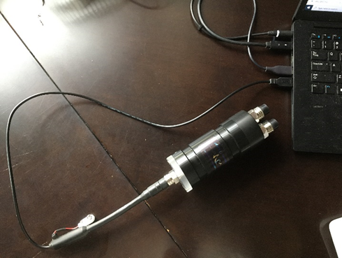
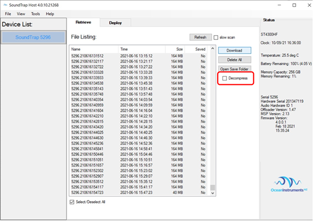
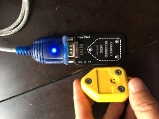

Data Download
Data from the Soundtrap recorder and the depth sensor need to be downloaded at the end of the deployment to external hard drive and mailed to the lab
Prep External Hard Drive for Data
Request an external hard drive for data transfer from Kourtney Burger (kourtney.burger@noaa.gov)
Create a folder named after the drift, for example ‘ADRIFT_009’
Create subfolder named after the drift followed by ‘_CENSOR’. For example, ‘ADRIFT_009_CENSOR’. This is for the data from the soundtrap—both the SUD files and the extracted files will go in this folder.
The depth data will be stored in the folder and named with the drift # and the type of depth sensor. For example ‘ADRIFT_001_Depth_Sensus’.
Soundtrap 300/4300 Data
Download Soundtrap Host Software (https://www.oceaninstruments.co.nz/downloads/)
Set computer time to UTC (IMPORTANT!)
Plug in Soundtrap to computer using special USB cable

Is your computer set to UTC???
Open SoundTrap Host Software. Once it has loaded the device, select the device (in left column).
Save Default File Location. Tools -> Set Default File Save Location [save ALL data to a folder with the drift number, for example ADRIFT-009]
Download Data. De-Select ‘Decompress’ and then select all and download. The decompression takes a long time to download, and this added time can make it difficult to download all the data. It can take a long time to download the data—so be sure your computer is plugged in and that you have enough space on the drive where the data is being saved to. When the data download begins, it will tell you how many files will download (in the popup). Record this number so that you can check to be sure that all the files were downloaded to your drive.

Check that all files transferred. Once all the data has been downloaded, check that the number of files is the same (in the soundtrap host software).
If you are preparing the SoundTrap for redeployment, then delete all the files on the SoundTrap and recharge until the battery is at 100%.
If there is sufficient space on the hard drive, please extract (decompress) the data. This is best done after it is downloaded to a drive. Open the Soundtrap Card Reader. Select the data and decompress. KEEP THE ORIGINAL SUD FILES.
Soundtrap 600/640 Data
Download Soundtrap Host Software (https://www.oceaninstruments.co.nz/downloads/)
Set computer time to UTC (IMPORTANT!)
Carefully open Soundtrap and remove internal SD cards
Is your computer set to UTC???
Open SoundTrap Card Reader. Once it has loaded, select the card from the drop down menu in the upper left corner
Save Default File Location. Tools -> Set Default File Save Location [save ALL data to a folder with the drift number, for example ADRIFT-009]
Download Data. De-Select ‘Decompress’ and then select all and download. The decompression takes a long time to download, and this added time can make it difficult to download all the data. It can take a long time to download the data—so be sure your computer is plugged in and that you have enough space on the drive where the data is being saved to. When the data download begins, it will tell you how many files will download (in the popup). Record this number so that you can check to be sure that all the files were downloaded to your drive.

Check that all files transferred. Once all the data has been downloaded, check that the number of files is the same (in the soundtrap host software).
If you are preparing the SoundTrap for redeployment, then delete all the files on the SoundTrap and recharge until the battery is at 100%.
If there is sufficient space on the hard drive, please extract (decompress) the data. This is best done after it is downloaded to a drive. Open the Soundtrap Card Reader. Select the data and decompress. KEEP THE ORIGINAL SUD FILES.
Depth Data
Plug in Reefnet sensor reader & place depth sensor on reader
Open Reefnet Sensus Ultra Software (https://reefnet.ca/downloads/)
a. Settings-> set up appropriate Com Port
b. Put sensor on reader (small vertical pins align with screws on sensor)

c. Select Units: meters, celcius, bar
Select Device and then download data. Save the data in the appropriate ADRIFT folder using the following naming convention: “ADRIFT_009_Depth_Sensus” (where the number is the number of the drift, and the ‘sensus’ is the type of depth sensor).
Deployment Details Metadata
Go to Deployment Details spreadsheet & ensure all fields regarding deployment metadata are filled in
- Fill in the Status column (J) to complete, lost, or sunk
- Fill in Deployment_Date_UTC (column U) and Recovery_Date_UTC (column X) with updated date and times
- Ensure all other fields are filled in and updated
Contact Kourtney Burger (kourtney.burger@noaa.gov) with any questions regarding the Deployment Details Spreadsheet
Copy and Ship Data
Double check that the folder and file names are accurate.
Please package hard drive so it can be securely mailed (ideally in their original box with plastic bits); then this should be shipped in a slightly larger box with bubble wrap or other packing materials.
Email kourtney.burger@noaa.gov with the dimensions of the boxes (Length x Width x Height and weight)
Kourtney will email shipping labels; these can be attached to the packages and they can be taken to a UPS/FedEx store.
Please let Kourtney know if you need extra hard drives (ideally keep 2 around)